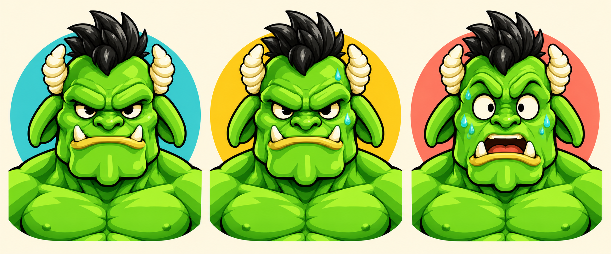

DIABITO FIT ARCADE · DIREÇÃO DE ARTE
Toque no nome de uma fase para ver a proposta visual.
Proposta de expressões para acompanhar a velocidade da esteira: atento no início, focado com esforço e surpreso no limite.

São imagens paradas de intenção visual. A troca de rosto por velocidade, as transições e a animação ainda precisam ser implementadas e testadas.
Abrir proposta de expressões ↗